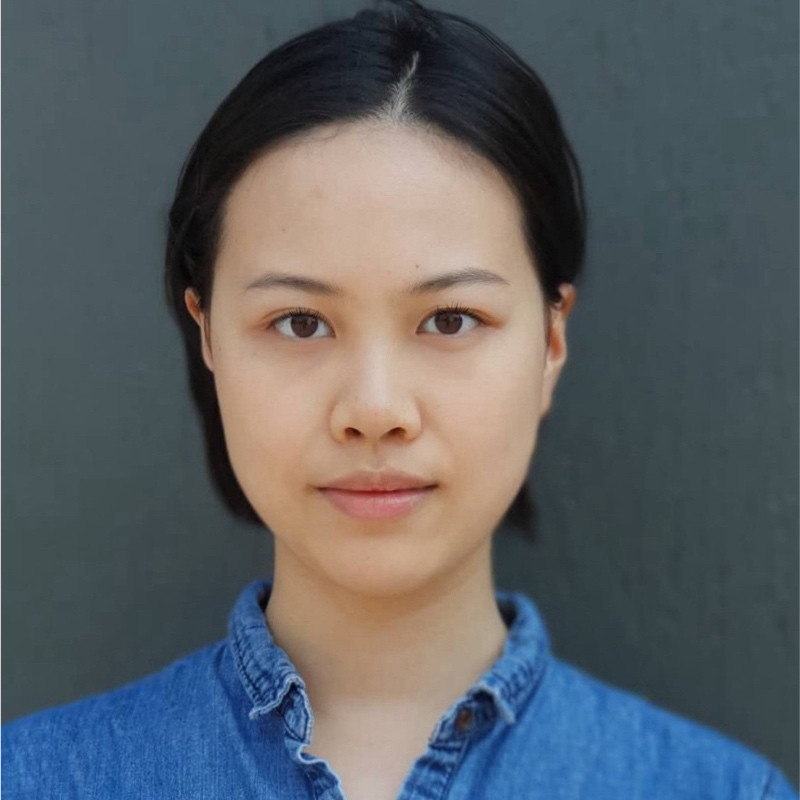

Starting HCI Researcher
Computer Science
The University of British Columbia
Human-Computer Interaction · Human-Centered AI
Email: yyang124@students.cs.ubc.ca
I am a starting HCI researcher at UBC.
My research lies in the tension space between [technical performance] and [the broader demands of responsible technology design], investigating how technical systems can be designed for a sustainable future.
At the University of British Columbia, working with Professor Dongwook Yoon at Socius Lab, I have pursued these questions through research on AI governance and HRI.
PASTA: A Scalable Framework for Multi-Policy AI Compliance Evaluation
CHI 2026
Imagine you're developing an AI system. The problem is, there are all these different AI policies you're supposed to follow, and each one comes with pages and pages of complicated requirements. Unless you're a policy expert or you go hire one, it's pretty hard to figure out if you're following the rules.
So we built PASTA, which functions like an AI lawyer for developers. And it is open-source.
You fill in a form describing your AI system, and PASTA goes through different policies to figure out which requirements you're meeting, which ones you might not be, and what you could do about it. The idea is to make something that normally takes a lot of time and expertise much easier for everyday developers.
Negotiating Robot Autonomy to Preserve User Responsiveness: A User Enactment Study of Personal Security Robots for Women's Safety
CHI 2027 Under Review
A woman is walking home alone when a stranger starts bothering her. A personal security robot could step in to help, but what if she doesn't want it to? Or what if it does nothing when she really needs help?
We wanted to explore how robots could protect women without taking away their control over the situation. We invited 15 women and female-identifying participants to act out six everyday safety scenarios with a researcher playing the robot. Through these enactments, we explored when women wanted a robot to step in, when they preferred to handle things themselves, and how a robot might appropriately act.
2027 CRA Outstanding Undergraduate Researcher Award
Computing Research Association · Nominated, pending decision
2026 CRA Outstanding Undergraduate Researcher Award, Honorable Mention
Computing Research Association · For PASTA, published at CHI 2026
Work Learn International Undergraduate Research Award
University of British Columbia · 2026 and 2025
Software Engineering Intern, Optum (Sept 2024 – Apr 2025)
I worked on internal infrastructure at Optum after a period of corporate restructuring and database migration. Many operational applications were originally designed to communicate with local database servers, where network latency was negligible. When the databases migrated, frequent and inefficient SQL queries became a major bottleneck.
One of these applications was Traceability Matrix, an internal system for managing project information, development sprints, tickets, and product records. It had been out of service for nearly a year, and its original developers had left the company. My work involved restoring the application and refactoring its C# code and SQL stored procedures to accommodate the new database infrastructure. The restored system supports: